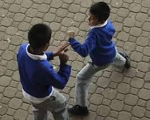

Que es

La "violencia escolar 2025" se refiere a la persistencia y, en algunos casos, al aumento de la violencia que ocurre dentro de los entornos educativos. Esta problemática abarca diversas formas de agresión, tanto físicas como psicológicas, y tiene un impacto significativo en el bienestar y el desarrollo de los estudiantes.